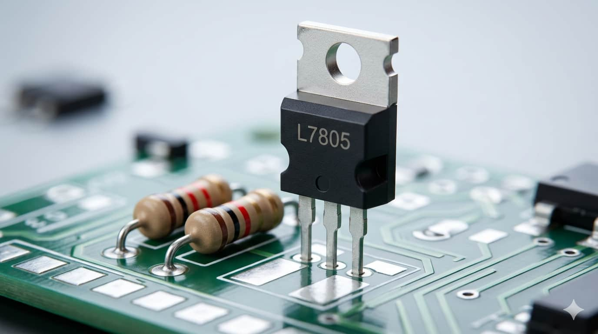
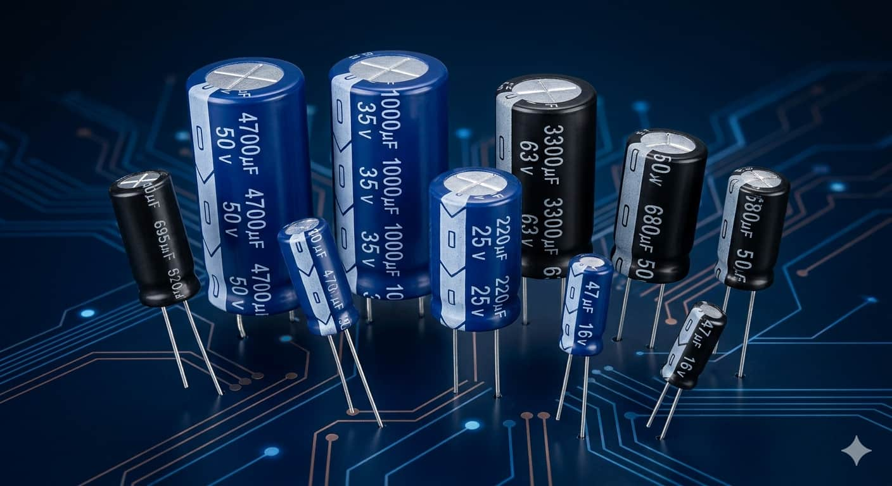
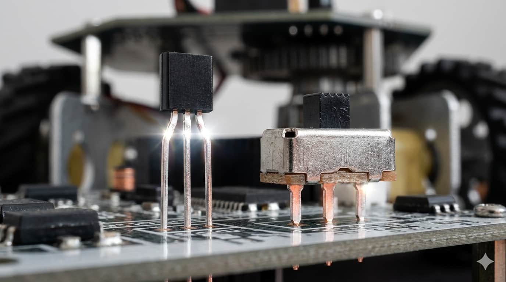
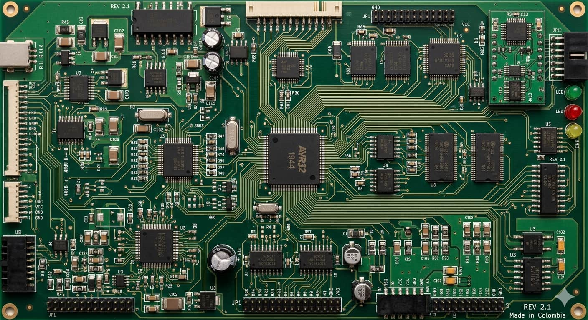
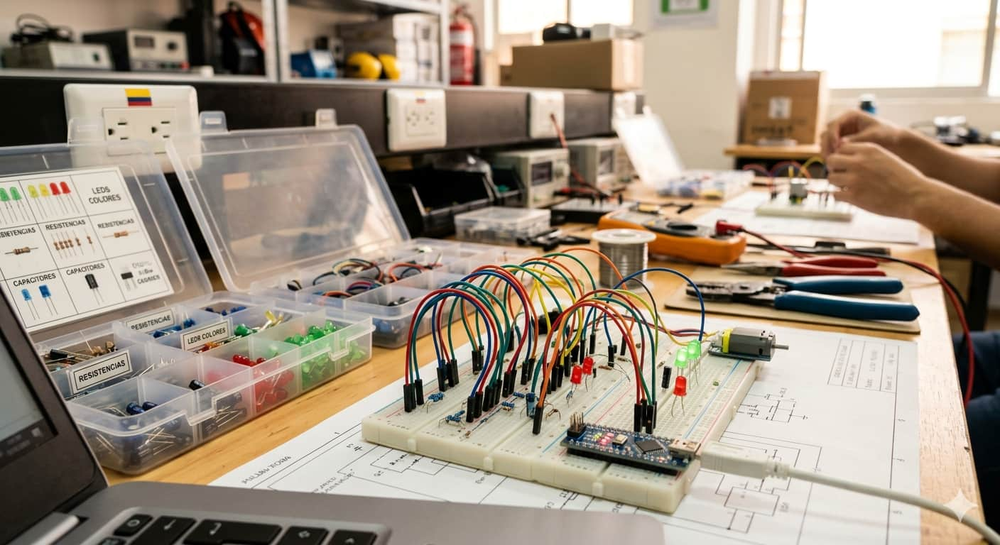

Regulación y Protección

Actúan como guardianes del sistema, gestionando el flujo de corriente para proteger los dispositivos más sensibles de posibles sobrecargas.

Los componentes electrónicos son las piezas fundamentales o ladrillos que constituyen los sistemas tecnológicos modernos. En el mundo de la robótica, estos elementos actúan como el puente vital entre la fuente de energía y la inteligencia del controlador, permitiendo que las señales eléctricas se transformen en acciones físicas y útiles.

Actúan como guardianes del sistema, gestionando el flujo de corriente para proteger los dispositivos más sensibles de posibles sobrecargas.

Componentes dedicados a limpiar las señales eléctricas y almacenar energía temporalmente para estabilizar el funcionamiento del robot.

Permiten dirigir la electricidad hacia diferentes secciones, funcionando como interruptores inteligentes controlados por el cerebro del proyecto.

La gestión segura de la electricidad es la prioridad número uno en electrónica. Los componentes electrónicos garantizan que cada módulo del robot reciba la potencia y señal exacta que necesita. Sin ellos, los excesos de corriente destruirían los microcontroladores. Su función de filtrar señales asegura que la comunicación entre sensores y motores sea fluida y libre de ruidos eléctricos.
Para construir proyectos de robótica exitosos, es necesario conocer a fondo las herramientas de trabajo y cómo interactúan entre sí en un escenario real como la protoboard.

La pareja fundamental en cualquier circuito de aprendizaje.
Componentes que manejan la potencia y la estabilidad.
El escenario central donde ocurre la magia de las conexiones.
Desde circuitos básicos de iluminación hasta prototipos complejos de automatización, la combinación de estos elementos permite el control preciso del voltaje. En la robótica avanzada, la gestión de señales garantiza que los actuadores respondan correctamente a las órdenes del código.